CS330 Lec11. Meta RL: Adaptable Models & Policies
Contents
CS330 Lec11. Meta RL: Adaptable Models & Policies#
Organization: 가짜연구소 (Pseudo Lab)
Editor: 민예린 (Yerin Min)
강의 자료: CS330 2020 Fall
강의 영상: Youtube
안녕하세요, AgileSoDA에서 강화학습 연구원으로 재직중인 민예린 입니다. 5기에 이어 6기까지 빌더로 참여하고 있는데, 배울점이 많은 분들과 함께 스터디를 진행할 수 있어서 즐거운 마음으로 하고 있습니다.
아직 부족함이 많지만 열심히 준비하였으니, 너그러운 마음으로 중간에 오류가 있다면 언제든 말씀 부탁드리겠습니다!
Meta Reinforcement Learning Problem statement#
Remind#
본 강의(CS330)의 1 ~ 8강에서는 강화학습에 집중되기 보다는 방법론에 대한 설명을 주로 하고 있습니다. 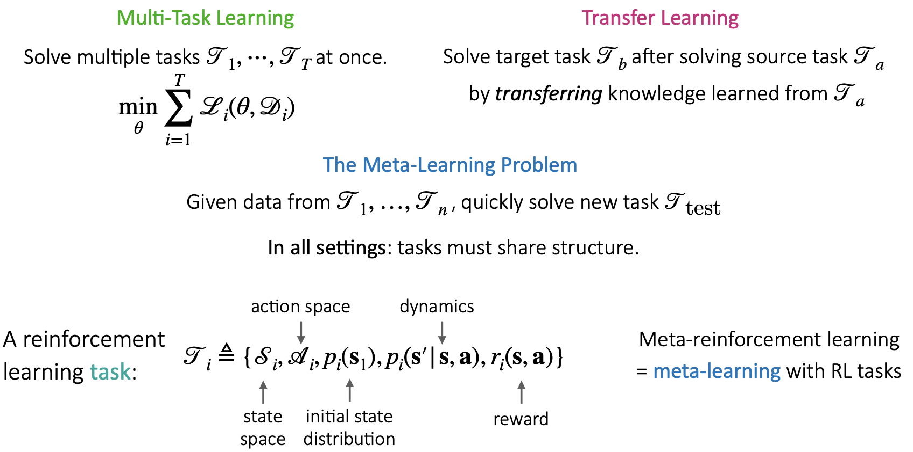
본 내용에들어가기 앞서서 이전 내용을 되살려 보고자 합니다. Lec 11에서는 아래 내용들을 기반으로 Meta Reinforcement Learning(이하 Meta-RL)에 대해 설명하고 있습니다.
Multi-Task Learning: 동시에 다양한 tasks를 학습하는 방법론
Transfer Learning: Source tasks를 학습한 후 Target task를 기존 지식 기반으로 학습하는 방법론
Meta Learning: 주어진 task dataset으로부터 다양한 tasks에 대해 학습한 후 새로운 task를 빠르게 학습(적용)하는 방법론
Formulation#
먼저 Supervised Learning(이하 SL)과 Meta Supervised Learning(이하 Meta-SL)을 비교해보겠습니다.
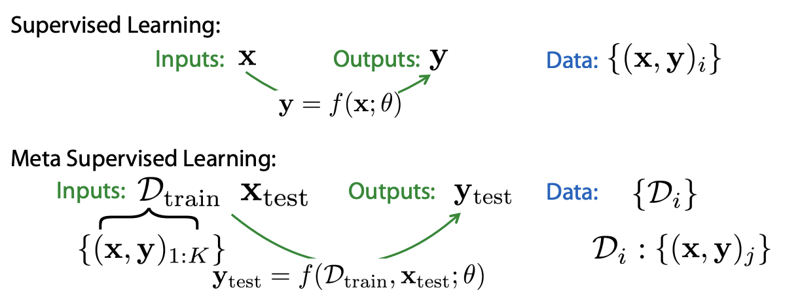
SL은 input x에 대한 output y를 예측하는 방법론이고, 그렇기 때문에 data는 (x, y) 쌍으로 이루어져 있습니다. 흔하게 생각할 수 있는 개와 고양이 분류 등이 이에 해당합니다.
반면 Meta-SL의 경우엔 meta train에서 다양한 tasks를 학습해야 하기 때문에 input data \(D_{train}\)은 각 tasks에 대한 (x, y) 쌍의 data를 보유하고 있으며, new task에 대한 test data (x, y) 쌍도 보유하고 있습니다.
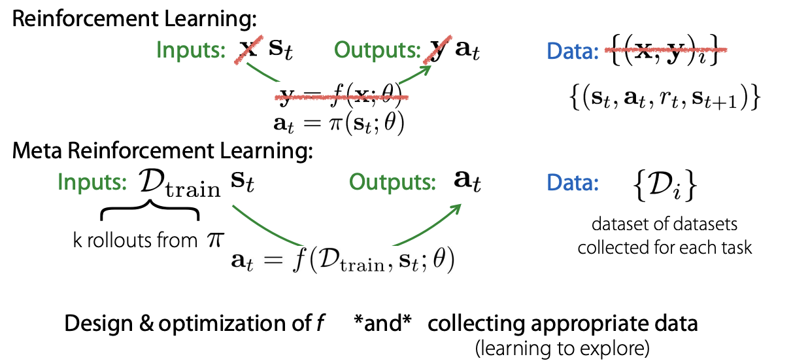
이제 위 내용을 RL formulation에 대입하여 보겠습니다.
RL의 경우 현재 state(\(s_t\))에 대한 action(\(a_t\))를 예측하는 방법론입니다. 그렇기 때문에 data는 현재의 state와 action, 그리고 action 대한 결과인 reward와 next state로 이루여져 있습니다. (\(s_t, a_t, r_t, s_{t+1}\))
Meta-RL은 위 SL과 Meta-SL 관계와 유사합니다. Meta-RL에서는 각 task에 대한 dataset을 이용하여 train을 진행하고 최종적으로는 풀고자하는 new task(\(s_t\))에 적용하게 됩니다.
강의에서는 Meta-RL을 위해서는 아래 두 파트가 중요하다고 말하고 있습니다.
k rollouts을 어떻게 모을 것인가?
each task에 대한 datasets을 어떻게 모을 것인가?
먼저 k rollouts의 경우 풀고자하는 task를 풀기 위하여 exploration을 잘 해야 하는데, 이때 이 exploration을 얼마나 잘 할 수 있는지에 대한 learning problem과 관련이 있다고 설명하고 있습니다. 아마 task를 잘 배우기 위해서 k rollouts에서는 task를 배우기 위한 충분한 데이터를 가지고 있어야 하는데, 강화학습이 그렇듯 exploration을 잘 하면서 학습하기 위한 data가 있어야 한다고 말하는 것 같습니다.
그리고 each task에 대한 datasets은 다음 강의에서 설명해주신다고 하니, 다음 발표자분의 자료에서 확인할 수 있을 거 같습니다!
마지막으로 dataset에 대한 추가적인 설명을 하고 예시로 넘어가겠습니다.
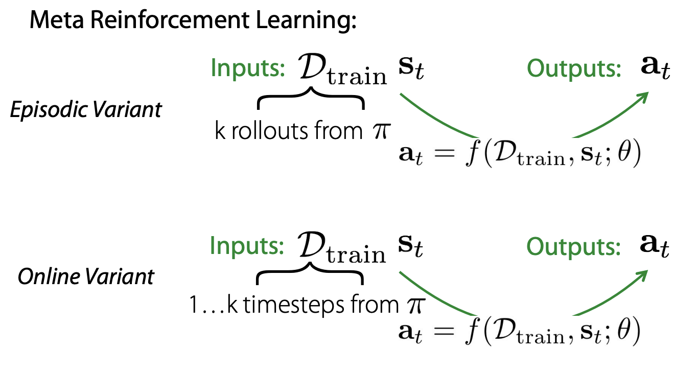
본 강의에서는 Meta-RL에서 사용하는 dataset이 문제 정의에 따라서 trajectory 기반의 episodic data일 수도 있고, timestep 기반의 data일 수도 있다고 합니다.
이는 강화학습에서 문제를 풀 때 이용하는 방식과 동일하게 생각하면 될 것 같습니다.
Example#
강의에서는 Meta-RL을 쉽게 이해하기 위해서 Maze 문제에 빗대어 설명하고 있습니다. 이때 task를 navigating different maze라고 설명하는데, (start position, goal position)이 달라서 가야 하는 경로가 다른 경우를 서로 다른 task다 라고 말하고 있는 것 같습니다.
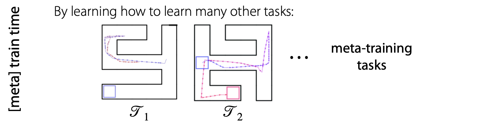 Meta Learning은 train time에서 다양한 tasks를 학습한 후 new task에 빠르게 적용하기 위한 방법이기 때문에, train time에서 다양한 map 또는 다양한 (start, goal)을 학습하게 됩니다.
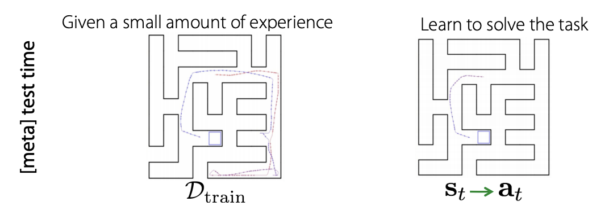
그리고 test time에서는 위 왼쪽 이미지(\(D_{train}\))처럼 몇 번의 경험들을 저장한 data를 활용하여서 오른쪽 문제를 풀 수 있게 됩니다.
이때 train에서 exploration한 trajectories를 활용한다면 오른쪽 start point에서 goal point로 가는 경로를 찾을 수 있고 start point를 re-instantiate 하여 기존 경험을 활용할 수 있다고 합니다.
이런 경우를 강의에서는 few shot RL이라고 언급하여 넘어가고 있습니다.
Black box Meta RL methods#
Black-box Meta-RL#
Meta Learning은 크게 1) Black-box based, 2) Optimization based, non-parametric based로 구분될 수 있습니다. 이에 대한 내용은 CS330 1~8강에서 반복적으로 설명하고 있습니다.
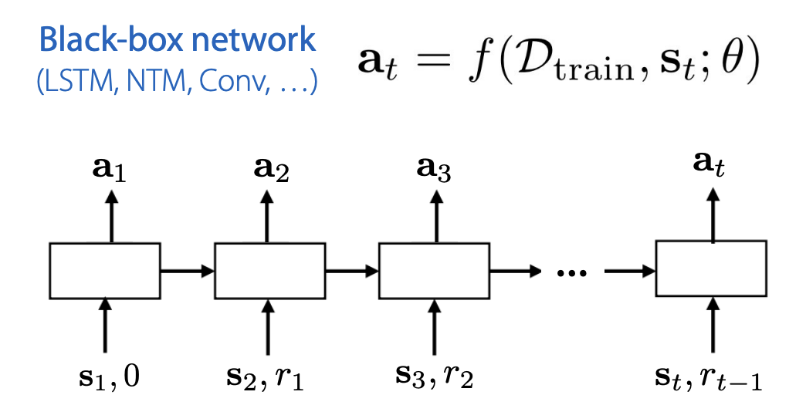
이전 강의에서 배웠던 Black-box meta learning의 경우 train dataset에서 dataset 내 순서가 없었으나, RL의 경우 current state, action, next state 등 데이터 사이의 시간적인 연결 관계가 있습니다.
따라서 일반적으로 data processing을 위하여 recurrent network를 사용하기도 한다고 합니다. current time step t 이전까지의 trajectories를 활용하여서 학습을 한다고 설명하고 있습니다.
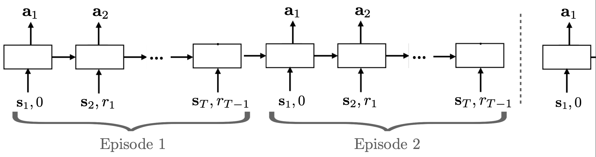 여기서 생각해 볼 것은 기존 recurrent network를 활용한 RL과 지금의 recurrent network 기반 Meta-RL이 어떤 차이가 있는지에 대한 것입니다. 강의에서는 두 가지 차이를 설명하고 있습니다.
먼저, reward가 input으로 들어가며 다양한 MDPs를 동시에 학습한다는 것입니다.
두 번째는, 동일한 task 내에서는 episode가 바뀌어도 hidden state를 계속 유지한다는 것에 차이가 있다고 합니다.
단순하게 생각해보면 일반적인 RL에서는 input으로 observation들어가고 output으로 action이 나오게 되는데, 위 그림으로 봐도 meta-rl에서는 input으로 reward(이전 보상) 정보까지 활용하고 있는 것을 볼 수 있고, 동시에 다양한 tasks를 학습한다는 차이가 분명하게 존재하는 것을 알 수 있습니다.
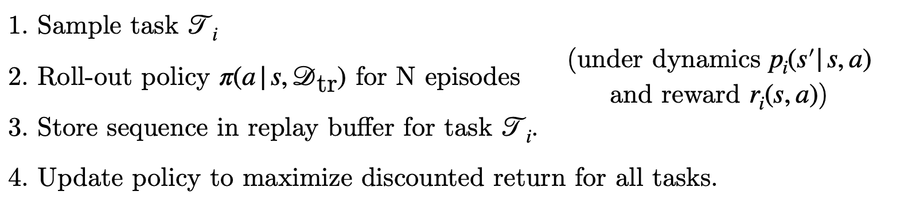 더 쉽게 이해하기 위해 학습 프로세스를 보겠습니다.Black-box Meta-RL은 위와 같은 프로세스로 학습을 진행하며, meta test time에는 1, 2번만 진행합니다.
roll-out : 쉽게 생각하자면 trajecory라고 이해하면 된다고 합니다. 추가적으로 설명을 붙여보자면 policy를 통해서 state->action을 얻는 과정을 rolling out 한다고 하는 것 같습니다. policy에서 input으로부터 ouput을 얻는 과정들을 통해 얻게 되는 trajectories를 의미한다고 이해하면 될 거 같습니다.
따라서 일반적인 RL 학습 과정에서 task sampling 하는 부분이 추가된다고 이해하면 쉽습니다.
task를 sampling 하여 가져온 후
policy를 통해 trajectories를 수집
buffer에 저장
모든 tasks에 대하여 reward를 최대화 하기 위한 policy update
아래는 강의에서 예시로 보여줬던 Architectures & Optimizers for Black-box Meta-RL 인데, 참고 이미지로 한 번 보셔도 좋을 거 같습니다!
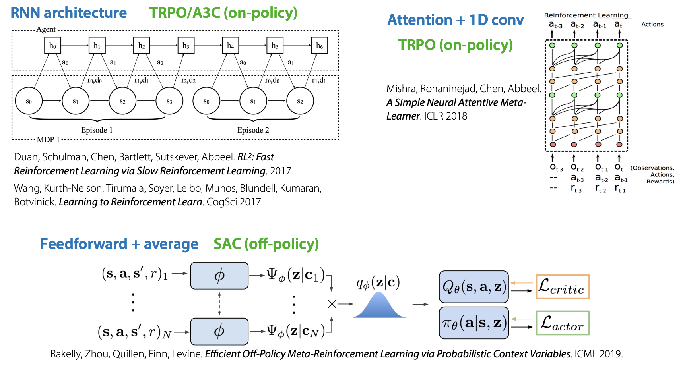
Example 1#
위 Black-box Meta RL의 첫 예시로 A Simple Neural Attentive Meta-Learner. ICLR 2018 논문을 간단하게 소개하고 있습니다.
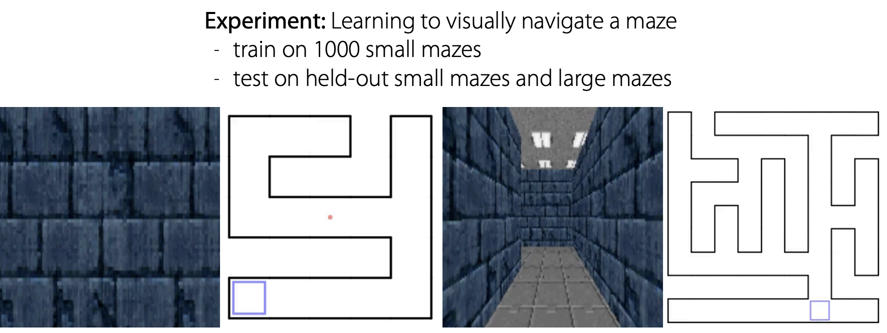 위 논문에서 실험한 예를 살펴보면 1000개의 mazes에서 training을 진행한 후 test mazes에서 길을 찾는 과정을 볼 수 있습니다.
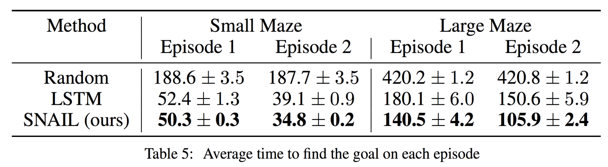
Finn 교수님께서 본 논문의 contribution으로 강조하는 부분은 test time의 Episode 1에서 충분한 maze 탐색을 진행한 것 만으로 Episode 2에서는 바로 goal path를 찾는다는 것이었습니다.
///
Example 2#
두 번째 예시는 Efficient Off-Policy Meta-Reinforcement Learning via Probabilistic Context Variables. ICML 2019입니다.
예시들을 본 강의에서는 간단하게 설명하고 넘어가고 있는데, 본 논문은 meta-rl이 continuous control problems에서도 좋은 성능을 내는 걸 확인할 수 있는 논문이라고 합니다.
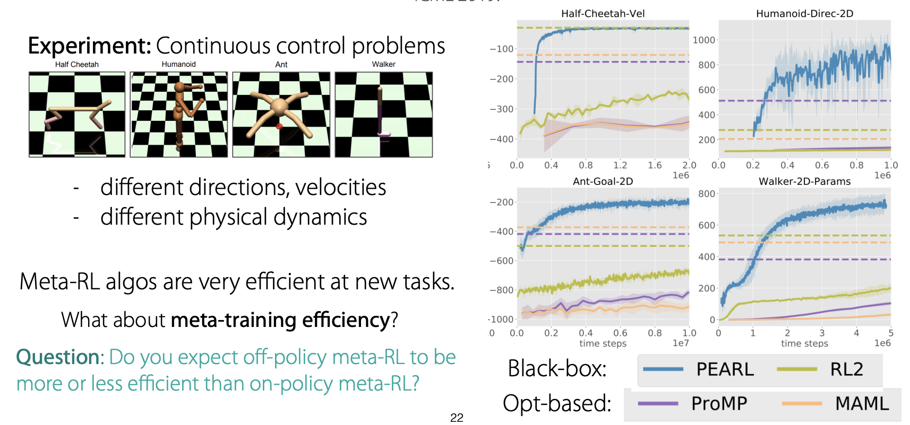
논문에서 좋은 성능을 얻었다고 말함에도 불구하고 Finn 교수님께서는 Meta-RL이 test time에서는 꽤 효과적인 방법일 수 있지만, train time에서는 효과적인 학습 방법이 아닐 수 있다고 말씀하셨습니다.
그리고 여러 tasks를 모두 배우기 위해서는 굉장히 많은 데이터가 필요하다고 합니다.
여기서 생각해볼 만한 질문을 하나 던져주셨습니다.
질문 : Off-policy meta-rl과 on-policy meta-rl 중 더 efficient 한 학습 방법은 무엇인가?
답변 : Off-policy meta-rl. Off-policy meta-rl은 학습 과정 중에 나온 trajectories를 replay buffer에 저장하고, 이를 sampling하여 학습하기 때문에 data efficiency가 좋습니다. 따라서 많은 양의 데이터가 필요한 meta-rl의 경우 on-policy 보다는 off-policy가 더 효율적인 방법이라고 할 수 있습니다.
Digression: Connection to Multi-Task Policies#
강의 중간에 첨언 같은 성격으로 Multi-task policy와의 connection에 대해 갑자기 설명하고 있습니다! Meta-rl도 어떻게 보면 multi-task rl의 관점에서 문제를 바라볼 수 있다고 하는 거 같습니다.
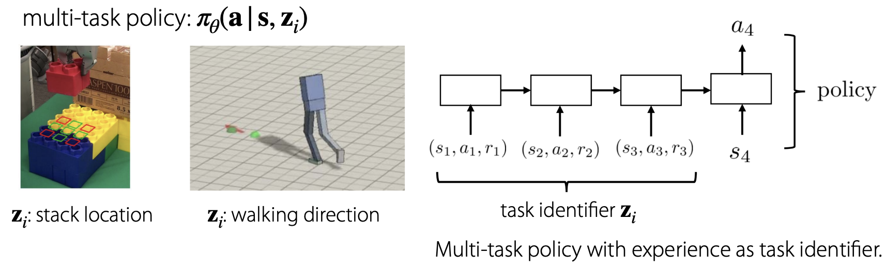 Experience가 task identifier로서 어떤 task에 해당하는 것인지 알 수 있는 정보로 이용될 수 있다고 합니다.
그리고 추가적으로 goal-conditioned에 대해서도 meta-rl과 연관지어서 설명해주셨습니다.
Goal-conditioned의 경우 task identifier는 different goal에 해당하며, meta-rl의 경우 goal-conditioned가 strict generalization 하다고 합니다.이는 rewards가 goals, 즉 other task로 표현될 수 있기 때문이라고 합니다.
생각해봤을 때 reward가 \(|s_t - s_{goal}|\) 이라면 goal이 달라지면 자동적으로 reward가 달라지기 때문에 strict generalization이라고 표현하는 것 같습니다.
Summary#
정리하자면, black-box meta-rl은 아래와 같은 특징을 가지고 있습니다.
general & expressive
a variety of degign choices in architecture
hard to optimize
inherits sample efficiency from outer RL optimizer
Optimization based Meta RL methods#
Overview#
다음은 Optimization based Meta-RL 입니다.
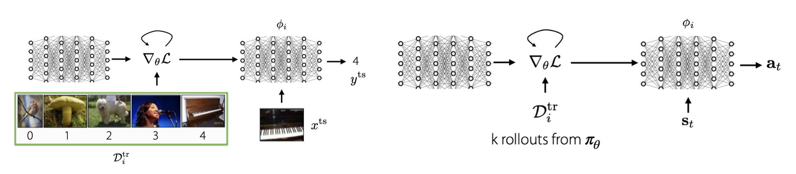
기존 optimization based meta learning에서, SL dataset을 활용하여 inner loop을 학습했다면, Meta-RL에서는 k rollouts를 활용하여 inner loop을 학습하게 됩니다.
이때 생각해볼 만한 질문을 하나 제시해 주셨습니다.
질문 : Inner optimization에서 이용해야 하는 method와 그 이유는 무엇인가?
답변 : Model-based RL을 추천한다고 합니다. 먼저, 그 이유는 off-policy method이기 때문에 data efficiency하고 gradient-based method라는 장점이 있기 때문이라고 하셨습니다. 또한 optimization based meta-rl과 combine이 용이하기 때문에 model-based rl이 가장 추천하는 방법이라고 합니다. 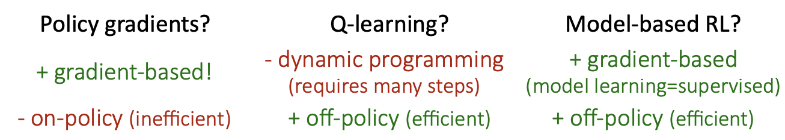
MAML + Policy Gradients#
위 질문과 연계로 MAML(optimization based meta learning) + policy gradients에 대한 예시를 간단하게 설명해주셨습니다.
Model-Agnostic Meta-Learning for Fast Adaptation of Deep Networks. ICML 2017 즉 MAML 논문은 대표적인 optimization based meta learning 논문입니다.
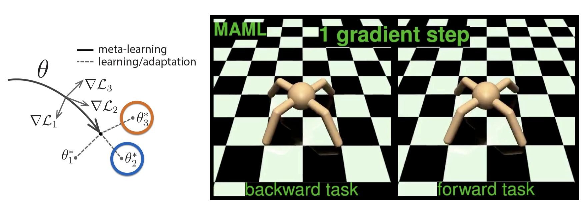
위 논문에 있는 예시로 <-, -> 각 방향 direction을 가지는 2 tasks가 있을 때 inner optimization이 진행되면서 tasks 능숙도가 발전되어 가는 것을 볼 수 있습니다.
강의에서 교수님이 간단하게만 설명하고 넘어가셨는데 0 gradient step과 1 gradient step의 움직임을 비교해 봤을 때 확연한 차이가 있었습니다.
MAML + Model-Based RL#
다음은 MAML + Model-Based RL에 대한 예시입니다. Model-based RL은 Lec10에서 배웠던 것과 같이 환경으로 사용 가능한 transition model을 활용하여 next state와 reward를 구하는 강화학습 방법입니다.
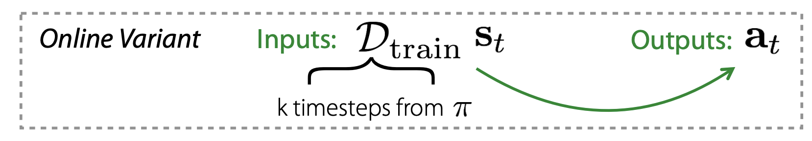
Learning to Adapt in Dynamic Environments through Meta-RL. ICLR ‘19 논문의 예시에서는 time steps 기준으로 dataset을 구성하고 있습니다.
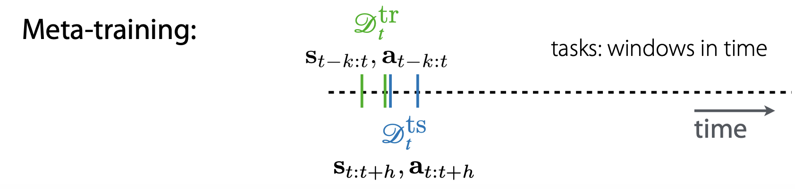
Meta training은 optimization based meta-rl에서 inner optimization에 해당하며, \(D_{tr}\)으로 \(\theta\)를 학습하는 것을 의미힙니다.
이때 time step을 기준으로 task를 구분해 학습했다고 합니다. 이때 구분된 task 내에서도 \(D_{tr}\) \(D_{ts}\)로 분리하여 dataset을 구성, 학습한 것으로 보입니다.
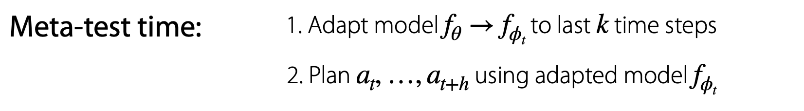
Meta testing은 outer optimization에 해당되며, meta training에서 학습된 \(\theta\)를 활용하여 meta parameter인 \(\phi\)를 update하게 됩니다.
\(f_{\theta} \rightarrow f_{\phi_t}\)
\(\phi_t \leftarrow \theta - \alpha \nabla_{\theta}L(\theta, \theta^{tr}_t\)
Summary#
정리하자면, optimization based meta-rl과 black-box based meta-rl은 각각 아래 이미지와 같은 특징들을 가진다고 합니다. 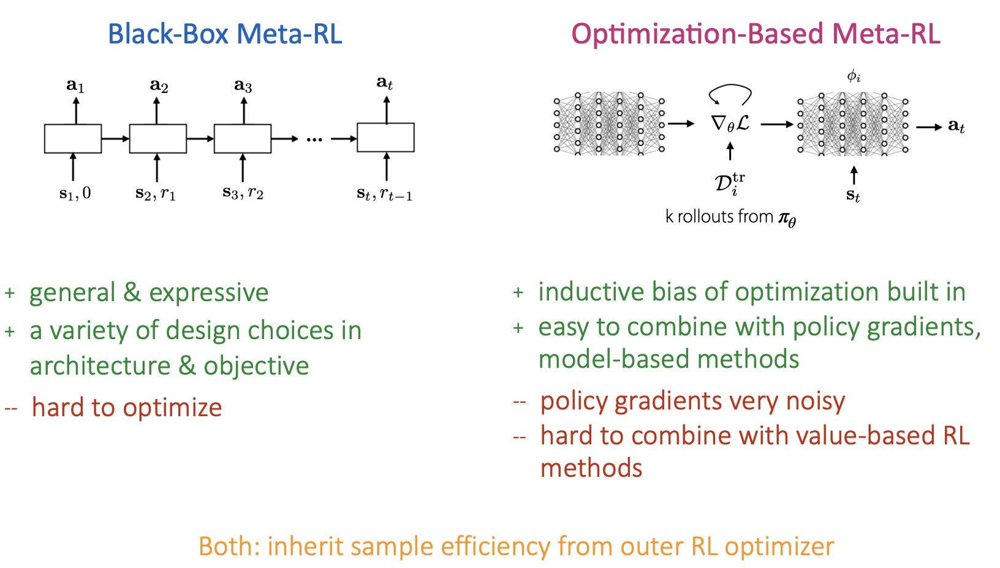
기존 meta learning에서 가졌던 특징들을 그대로 이어서 보유하고 있는 것 같습니다.